Mulheres Históricas
Ada Lovelace (1815–1852)
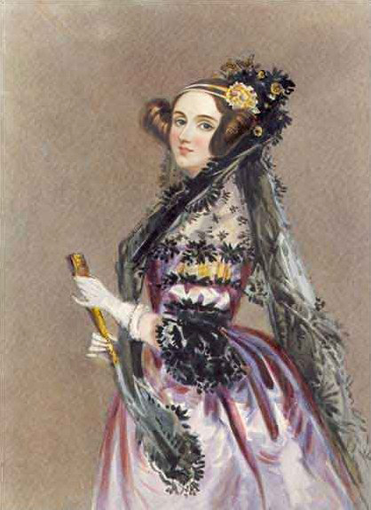
Augusta Ada Byron era uma matemática e escritora inglesa,
filha do famoso poeta Lord Byron. Desde cedo, ela foi
incentivada pela mãe a estudar matemática e lógica,
algo incomum para mulheres da época.
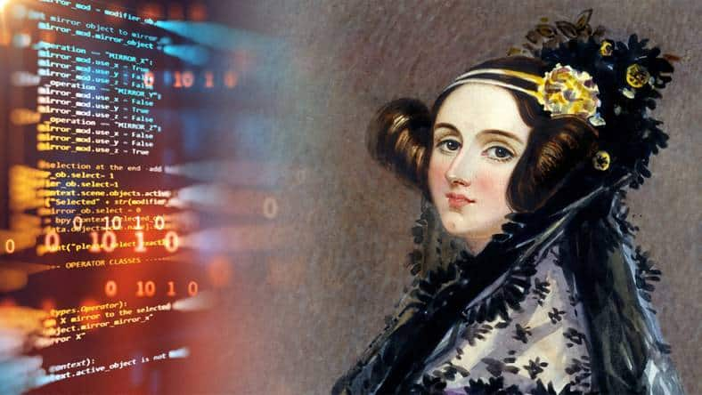
Ela é amplamente reconhecida como a primeira programadora
de computadores do mundo. Ao traduzir um artigo sobre a
"Máquina Analítica" de Charles Babbage, Ada adicionou
extensas notas próprias e descreveu um algoritmo para
calcular a sequência de Bernoulli. Ela percebeu que os
computadores poderiam ir muito além de cálculos matemáticos
e processar qualquer tipo de informação.
Margaret Thatcher (1925–2013)
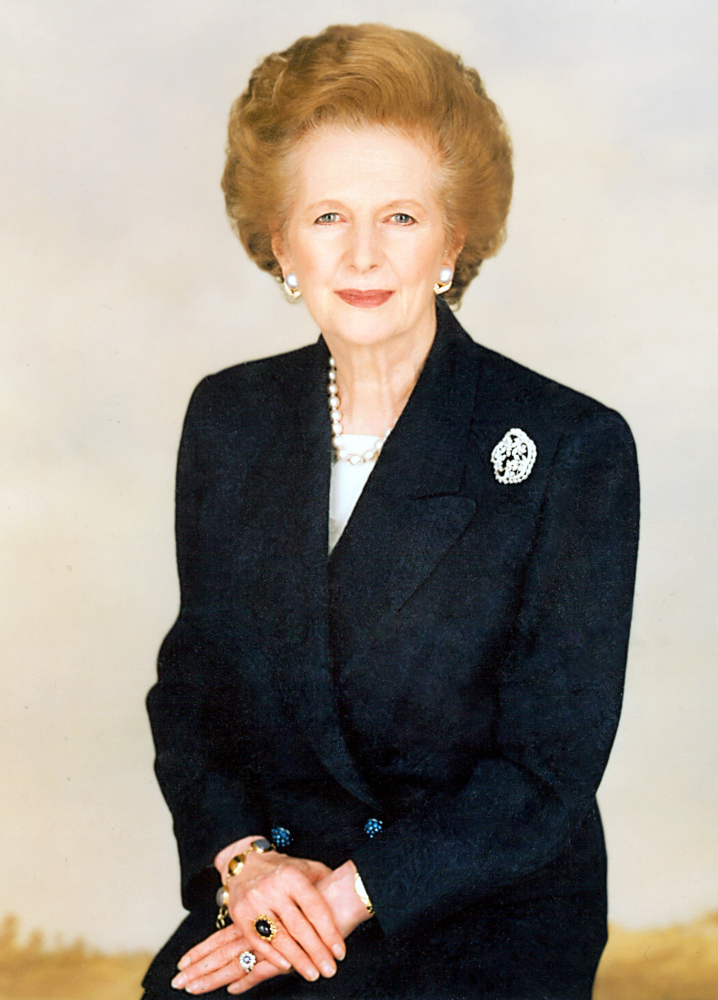
Nascida na Inglaterra e formada em química e direito,
Thatcher entrou para a política britânica e ascendeu
nas fileiras do Partido Conservador.

Ela foi a primeira mulher a se tornar Primeira-Ministra
do Reino Unido, governando de 1979 a 1990. Conhecida
como a "Dama de Ferro", implementou políticas econômicas
neoliberais, reduziu o poder dos sindicatos e teve forte
influência no cenário político durante a Guerra Fria.
Margaret Hamilton (1936–Presente)
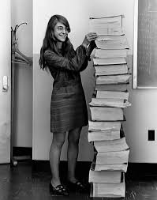
Cientista da computação e engenheira de software americana.
Trabalhou inicialmente no MIT desenvolvendo software para
previsão do clima e sistemas de defesa.
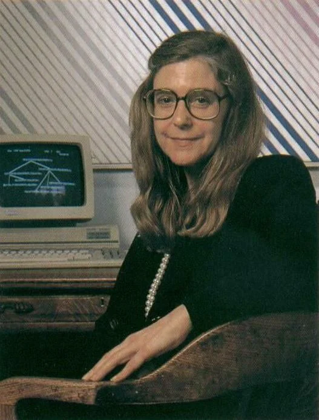
Ela foi diretora da Divisão de Engenharia de Software do
MIT Instrumentation Laboratory, responsável pelo software
de voo das missões Apollo da NASA. O trabalho de sua equipe
foi essencial para o sucesso do pouso da Apollo 11 na Lua
em 1969. Ela também ajudou a popularizar o termo
"engenharia de software".
Jane Austen (1775–1817)
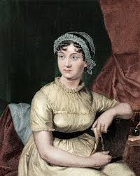
Romancista inglesa que viveu grande parte de sua vida no
interior da Inglaterra. Austen começou a escrever ainda
jovem, observando as interações sociais da nobreza e da
classe média da época.

Ela revolucionou a literatura com obras como
Orgulho e Preconceito, Razão e Sensibilidade e Emma.
Seus romances trazem ironia, crítica social e uma análise
profunda da posição das mulheres na sociedade do século XIX.
Madre Teresa de Calcutá (1910–1997)

Nascida Anjezë Gonxhe Bojaxhiu, tornou-se freira católica
e mudou-se para a Índia, onde dedicou sua vida ao cuidado
dos mais pobres.
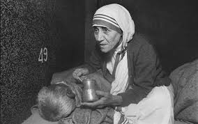
Fundou a congregação Missionárias da Caridade em 1950.
Seu trabalho humanitário com doentes, órfãos e pessoas em
situação de extrema pobreza lhe rendeu o Prêmio Nobel da Paz
em 1979. Foi canonizada como santa pela Igreja Católica em 2016.
Irmã Mary Kenneth Keller (1913–1985)
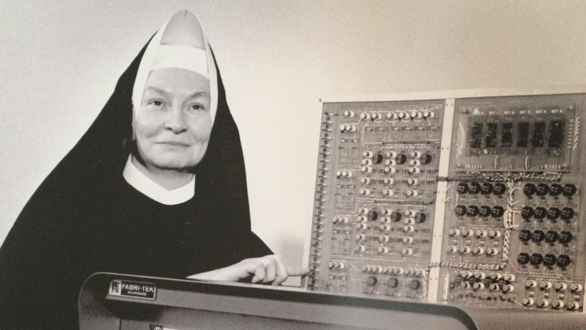
Freira, educadora e pioneira da computação nos Estados Unidos.
Estudou matemática e física e dedicou sua vida à educação.
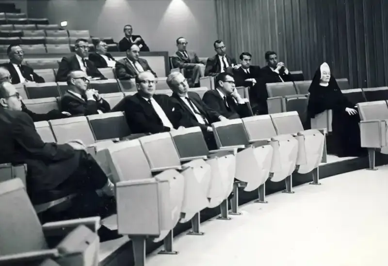
Em 1965 tornou-se a primeira mulher nos EUA a obter um
doutorado em Ciência da Computação. Trabalhou no Dartmouth
College ajudando no desenvolvimento da linguagem BASIC e
defendeu o uso de computadores na educação e a inclusão
de mulheres na área de tecnologia.
Mary Jackson (1921–2005)
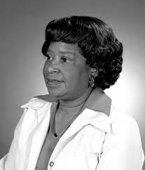
Matemática e engenheira aeroespacial afro-americana.
Começou sua carreira como "computador humano" na NACA,
organização que posteriormente se tornaria a NASA.
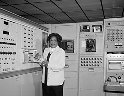
Superou barreiras de segregação racial e de gênero para
se tornar a primeira engenheira negra da NASA em 1958.
Trabalhou com aerodinâmica e análise de dados de túneis
de vento, contribuindo para o sucesso do programa espacial
americano.